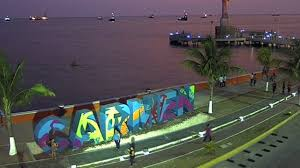
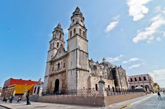
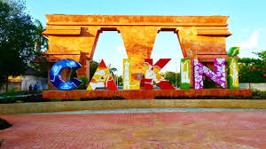
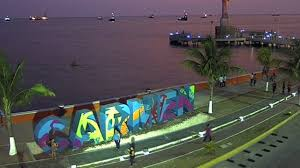
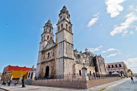
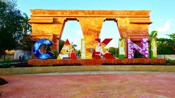
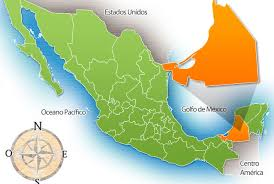

CAMPECHE ES CONSIDERADO PATRIMONIO CULTURAL DE LA HUMANIDAD POR LA UNESCO, ESTO SE DEBE A SU CENTRO HISTORICO QUE SE ENCUENTRA RODEADO POR MURALLAS
CAMPECHE |
|
Oficialmente llamado Estado Libre y Soberano de Campeche es uno de los treinta y un estados que, junto con la Ciudad de México, forman los Estados Unidos Mexicanos. Su capital y ciudad más poblada es San Francisco de Campeche. Está ubicado en la península de Yucatán, región sureste del país, limitando al norte y al noreste con Yucatán, al este con Quintana Roo, al sureste con Belice, al sur con Guatemala, al oeste con el Golfo de México y al suroeste con Tabasco. Con 899 931 habitantes en 2015, es el tercer estado menos poblado —por delante de Baja California Sur y Colima, el menos poblado— y con 14,20 hab/km², el cuarto menos densamente poblado —por delante de Chihuahua, Durango y Baja California Sur, el menos densamente poblado. Fue fundado el 29 de abril de 1863.Campeche se deriva de las palabras kin (en maya: Kin, ‘sol’)? que significa sol y pech, como ya se indicó, garrapata. Algunos suponen que a este nombre (kin pech) se le puede agregar el prefijo ah que quiere decir lugar y en conjunto diría "lugar del señor sol garrapata".
|
|